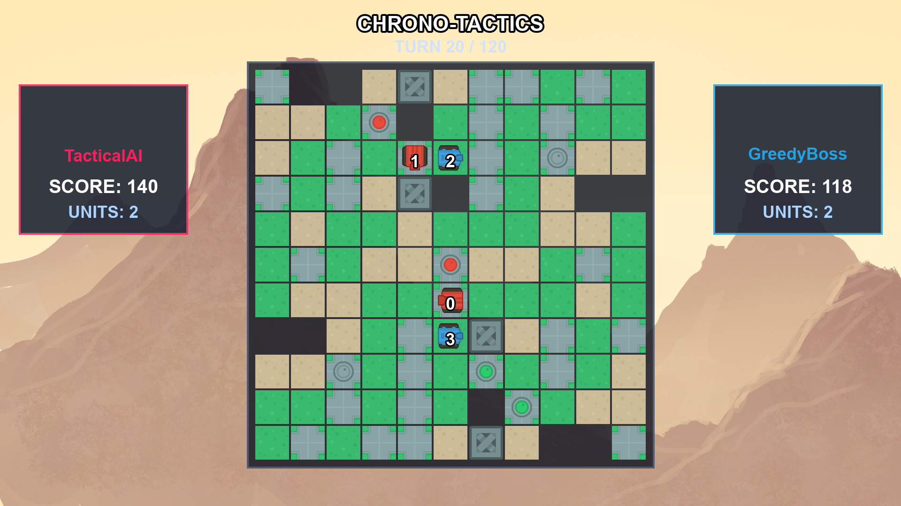
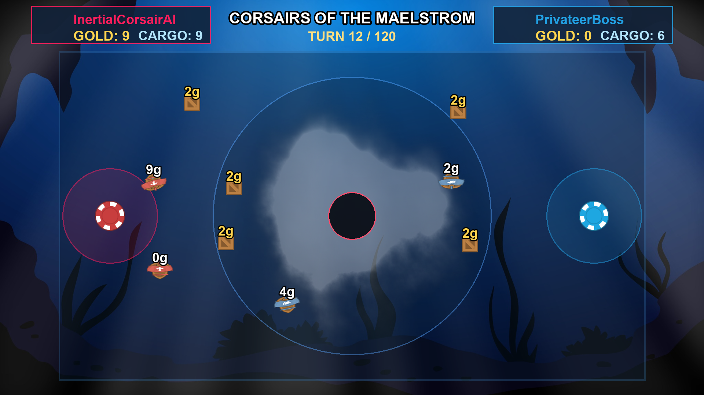
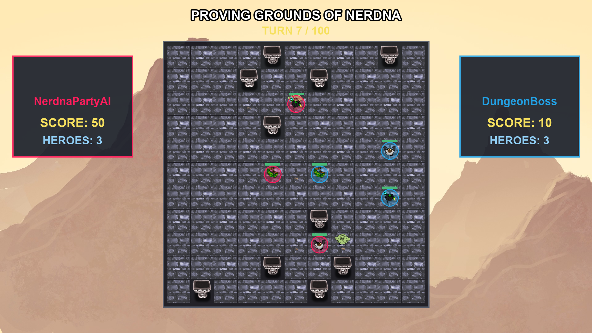

Bot Programming • 1v1
3 Leagues (Wood 2 → Bronze+)
1. Chrono-Tactics — Arène Temporelle & Topologie Dynamique

Retrouvez nos 6 créations communautaires développées avec le SDK officiel CodinGame : 3 puzzles algorithmiques multijoueurs (graphes, flots, balistique inertielle) et 3 puzzles RPG tactiques dotés d'un viewer PixiJS Dual-Mode (RPG Sprites vs Geometric Debug).
RPG SPRITES et GEOMETRIC DEBUG !
Contrôles : Lecture/Pause, Curseur tour par tour, Vitesse (1x à 10x) et Plein écran.
| # | Puzzle | Catégorie | Thème & Mécaniques Clés | GitHub (@codingame-team) |
CodinGame | IDE Demo |
|---|---|---|---|---|---|---|
| 1 | Chrono-Tactics | Bot Programming | Arène 11×11 à effondrement progressif, BOMB, PUSH, Voronoï & MCTS |
codingame-chrono-tactics | Contribution | IDE Demo |
| 2 | Quantum Relay | Bot Programming | Arbres de relais d'énergie (LINK), surcharge (OVERCHARGE) & intersections |
codingame-quantum-relay | Contribution | IDE Demo |
| 3 | Corsairs of the Maelstrom | Bot Programming | Physique inertielle à masse variable, vortex du Maelström, ANCHOR & FIRE |
codingame-corsairs-maelstrom | Contribution | IDE Demo |
| 4 | Proving Grounds of Nerdna | RPG 1v1 Dual-Mode | Compagnie RPG (Fighter, Mage, Cleric), Gardiens Morts-Vivants & Coffres de Reliques | codingame-proving-grounds-nerdna | Contribution | IDE Demo |
| 5 | Ultima: Dungeon Delver | Optimization Dual-Mode | Exploration solo d'Ultima IV, gestion Torche/PV/PM, sorts FLAM_POR & MANI |
codingame-ultima-dungeon-delver | Contribution | IDE Demo |
| 6 | Overlord's Labyrinth | RPG 1v1 Dual-Mode | Allocation de Gemmes d'Énergie, invocations sur Pentagrammes (Hound, Guard, Wraith) | codingame-overlords-labyrinth | Contribution | IDE Demo |




Partagez vos retours, stratégies de bots ou suggestions sur les 6 puzzles ! Les commentaires sont stockés gratuitement via GitHub Discussions (Giscus).